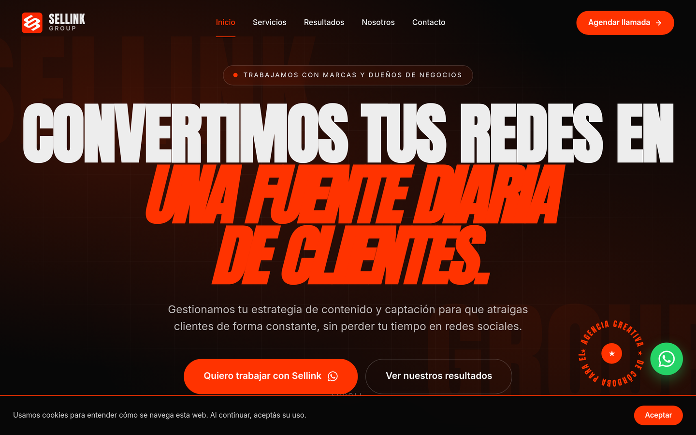

Sellink Group
Visit live site
El proyecto
Sellink Group es una agencia creativa que necesitaba reposicionarse hacia clientes corporativos de mayor volumen. Su sitio anterior era un template genérico de agencia — sin personalidad, sin diferenciación y mal en mobile.
El brief fue claro: dark, audaz, que se sienta custom sin ser difícil de mantener. Que transmita agencia de nivel senior desde el primer scroll.
El problema
Template de Wix que tardaba 5+ segundos en cargar. Sin adaptación mobile real, sin dark mode nativo, sin identidad visual coherente. Los clientes potenciales no terminaban de confiar en la agencia porque el sitio no reflejaba la calidad del trabajo.
La solución
Sitio modular con sistema de secciones componetizadas en CSS custom properties. Dark mode nativo como default. Tipografía display uppercase con tracking amplio. Formulario de contacto accesible con validación semántica. Deploy en Netlify con headers de seguridad.
Decisiones técnicas
Design tokens CSS
Sistema de custom properties por capa: color semántico, tipografía, espaciado, radios. Swap dark/light sin JS — solo data-theme attribute en html. Fácil de mantener y extender.
Layout modular
Cada sección es independiente: .services, .cases, .team, .contact. Sin dependencias entre módulos. Nuevo servicio = copiar un <article>. Sin tocar CSS global.
Formulario semántico
aria-required, aria-invalid, aria-describedby en cada campo. Mensajes de error con role="alert". inputmode correcto por tipo de campo. Funciona con teclado, screen reader y autocomplete del browser.
Typography scale
Type scale fluida con clamp() entre 4 breakpoints. Display en Space Grotesk 700, body en Inter 400/500. Tracking en uppercase calculado por tamaño (más grande = más tracking). Sin jarring jumps en resize.
Print stylesheet
Hoja de estilos @media print que oculta nav, cursor, animaciones y background. Imprime en blanco con tipografía legible. Útil cuando clientes imprimen propuestas con el sitio como referencia.
Contraste WCAG AAA
Rojo #FF3300 sobre negro #070707 pasa AAA (ratio 5.4:1). Texto muted en #B0B0B0 sobre fondo = 7.1:1. Verificado con Colour Contrast Analyser y automatizado en CI.